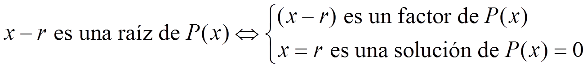

Ecuaciones y sistemas
Resumen
Una ecuación es una igualdad algebraica que es cierta solo para ciertos valores de las variables. Estos valores se llaman soluciones de la ecuación.
El discriminante, Δ = b2 – 4ac, es el que decide el número de soluciones: si Δ > 0 hay dos soluciones; si Δ = 0 hay una solución y si Δ < 0 no hay solución.
Si P(x) es un polinomio, entonces:

Esto es por lo que las soluciones de una ecuación también se llaman raíces.
Entonces, para resolver una ecuación de grado mayor que 2, tenemos que descomponer el polinomio.
Una ecuación bicuadrada es una ecuación de grado 4 sin los términos de grado 1 y 3. Para resolver una ecuación bicuadrada tienes que hacer un cambio de variable: z = x2. Entonces hay que resolver la ecuación de 2º grado y finalmente deshacer el cambio.
Una ecuación racional es una ecuación con fracciones algebraicas.
Para resolverla hay que hacer lo mismo que con otras ecuaciones con denominador, pero eliminando las soluciones que hagan cero los denominadores.
Siempre se puede reducir un sistema de dos ecuaciones lineales a uno de la forma:
Una solución del sistema lo ha de ser de las dos ecuaciones.
Un sistema de ecuaciones lineales puede tener:
–Una solución: compatible determinado.
–Infinitas soluciones: compatible indeterminado. –Ninguna solución: incompatible.
Hay métodos para convertir un sistema de ecuaciones en una ecuación con una sola incógnita.
método de sustitución: Consiste en despejar una incógnita en una ecuación y sustituirla en la otra.
método de igualación: Consiste en despejar una incógnita en las dos ecuaciones e igualarlas.
método de reducción: Consiste en eliminar una incógnita en una ecuación combinando linealmente las dos ecuaciones.
Obra publicada con Licencia Creative Commons Reconocimiento No comercial Compartir igual 3.0